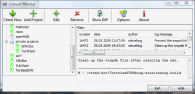
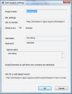
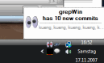
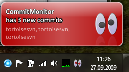
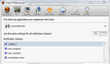
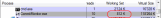

CommitMonitor
$ADSENSE_TOP$
The CommitMonitor is a small tool to monitor Apache™ Subversion®
repositories for new commits. It has a very small memory footprint and resides in the system tray.
.
{kind=link}
In case you have multiple repositories under an SVNParentPath with the SVNListParentPath directive activated in Apache, the CommitMonitor can monitor these URLs too, as you can see in the screenshot above: the "Private Projects" is shown as a folder, which means this is an URL to an SVNParentPath URL.
The new commits are shown on the top right of the main dialog, while the commit log message is shown at the bottom right.
A doublelick on any revision in the top right view will fetch the diff for that revision as a unified diff so you can further inspect the commit. If you have TortoiseSVN installed, the CommitMonitor automatically uses TortoiseSVN to do the diff.
Of course, you can configure the time interval the CommitMonitor should check your repositories for new commits:
.
{kind=link}
Just make sure in case you want to monitor a public open source repository to set the check interval not too small - you don't want to hammer those repositories!
Once CommitMonitor has found new commits to one or more of the repositories you
monitor, it shows a notification popup, and the system tray icon changes the 'eyes'
from black to red. And if you have the system tray animation enabled in the
Options dialog, the eyes will also move around until you open the CommitMonitor
main dialog (by doubleclicking on the system tray icon) and read the commits.
.
{kind=link}
If you have Snarl installed,
CommitMonitor automatically uses Snarl to show its popups:
.
{kind=link}
CommitMonitor also registers itself with Snarl which will allow you to configure the popups in more detail:
.
{kind=link}
As already mentioned, the CommitMonitor resides in your system tray (if so required).
Tools which do that should use as less resources as possible, and that's what
CommitMonitor tries to do. As you can see in the screenshot below, when the
program is idle (i.e., not currently connecting to a repository and downloading
information) it only uses about 1MB of RAM. Of course, it uses more
(about 15MB RAM) while it accesses the repositories.
.
{kind=link}
CommitMonitor is available under the GP licence
(GPL).
You can either download an msi installer or a zipped exe file, whatever suits you:
Download page
Of course, the source code is available too. You can browse or check it
out directly from the Subversion repository.